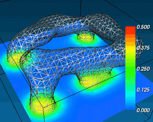

|
Ready, version 0.4 © 2011, 2012 The Ready Bunch: Tim Hutton, Robert Munafo, Andrew Trevorrow, Tom Rokicki.  Ready is an open source, cross-platform application for exploring various reaction-diffusion systems. Distributed under the GPLv3 license. http://code.google.com/p/reaction-diffusion/ |